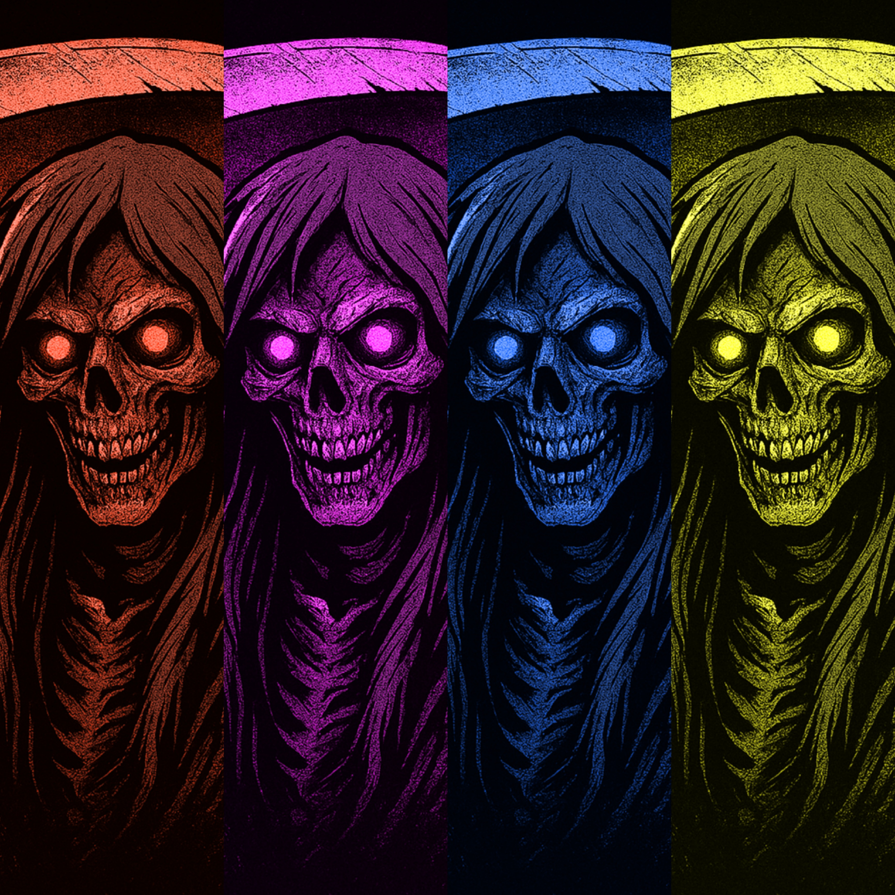

Folg Uns


Auch wenn es etwas Spät ist, erscheint heute unsere Weihnachtssingle Devil Klaus und ist auf Amazon erhältlich. Ihr könnt unser neues Album ab Heute über Spotify, AppleMusic, AmazonMusic und Deezer hören. wir wünschen euch viel Spaß.
Es ist soweit, das neue Album Love Hate Death DLC ist endlich raus. Es ist eine Erweiterung des Albums LOVE HATE DEATH mit Songideen die nun umgesetzt wurden. Das Album ist jetzt auf Amazon erhältlich. Ihr könnt unser neues Album ab Heute über Spotify, AppleMusic, AmazonMusic und Deezer hören. wir wünschen euch viel Spaß.
Es ist soweit, das neue Album Black Sea ist endlich raus und auf Amazon erhältlich. Ihr könnt unser neues Album ab Heute über Spotify, AppleMusic, AmazonMusic und Deezer hören. wir wünschen euch viel Spaß.
Es ist soweit, das neue Album CHAOS ist endlich raus und auf Amazon erhältlich. Ihr könnt unser neues Album ab Heute über Spotify, AppleMusic, AmazonMusic und Deezer hören. wir wünschen euch viel Spaß.
Es freut uns bekannt zu geben, dass am 02. Mai 2025 ein neues Album mit dem Titel "Chaos" erscheint. Das neue Album umfasst diesmal nur 9 Songs, ist aber wieder ein wilder Mix, diesmal aus Death Metal/Deathcore gepaart mit Jazz, Swing, HipHop und anderen Genres.
Die neue Single ist nun da, viel spass beim hören.
Gute Neuigkeiten! Am Ostermonatg erscheint die neue Single "Necks and Guillotines. Die neue Single ist ein reiner Death Metal Song und ist stilistisch Old-School angelehnt.
Es ist soweit, unser Album "Love Hate Death" ist jetzt erhältlich und kann überall gestreamt werden.
Desweitern haben wir unsere Website überarbeitet und den Bereich Bandmembers hinzugefügt.
Die Arbeiten an unserer Website sind vorerst abgeschlossen.
Alle Arbeiten an dem neuen Album "Love Hate Death" sind beendet. Das neue Album erscheint am Freitag, dem 11. April 2025 und ist auf Amazon als digitale Version verfügbar. Des Weiteren kann das Album auf Spotify, Apple Music, YouTube Music, Deezer und Co. gestreamt werden. Wir wünschen euch viel Spaß beim Hören.
Die Arbeiten an dem Album "Dark World" sind final beendet. Das Album erscheint am Freitag, dem 04. April 2025 auf Amazon. Ab da kann das Album auch auf Spotify, YouTube, Apple, Deezer und Co. gestreamt werden. Wir wünschen euch viel Spaß mit dem neuen Album.
Die neue Single "My Cat Eat Your Dog" ist jetzt erhältlich und kann überall gestreamt werden.
Ein kleiner Aprilscherz wartet auf euch. Ein Song für jeden, der auch im Team Katze ist. Die neue Single "My Cat Eat Your Dog" erscheint am Dienstag, dem 01. April 2025 auf Amazon und kann ab Freitag, dem 28. März 2025 vorbestellt werden. Ab dem 01. April kann der Song auch auf Spotify, YouTube, Apple, Deezer und Co. gestreamt werden.
Die Single "Eau De Cologne" ist jetzt draußen. Sie kann auf Amazon gekauft und auf Spotify und Co. gestreamt werden.
Juhu, es ist soweit... die Single "Eau De Cologne" kann ab jetzt auf Amazon vorbestellt werden.
Wir freuen uns euch mitzuteilen, dass die neue Single "Eau De Cologne" nun bald veröffentlicht wird. Ab dem 20. März kann die Single auf Amazon vorbestellt werden. Das Release ist dann am Dienstag, dem 25. März 2025 und ab dann erhältlich und kann zudem auf Spotify, YouTube, Apple, Deezer und Co. gestreamt werden.
Tolle Neuigkeiten! Die Single "Morgue Disco" ist jetzt auf Amazon erhältlich und im Stream bei Spotify, YouTube, Apple, Deezer und Co.
Das Album "Symphony of Death" wurde heute an unseren Partner DistroKid übergeben und geht am Dienstag, dem 18. März 2025 live und kann auf Amazon erworben werden.
Da es weiterhin Probleme mit RouteNote gibt, unser Album "Symphony of Death" zu releasen, werden wir unsere Partnerschaft jetzt wechseln und ab sofort unsere Musik über DistroKid veröffentlichen. Aufgrund der Umstände haben wir das Album auf unserem YouTube-Channel "Corpseforge" für euch veröffentlicht. Weitere Informationen folgen in den nächsten Tagen.
Leider gibt es weiterhin Schwierigkeiten, unser Album "Symphony of Death" zu veröffentlichen. Darum werden wir uns jetzt nach Alternativen umschauen. Sobald es etwas Neues gibt, werdet ihr hier über "News" informiert.
Wir haben es geschafft! Unser erstes Album "Symphony of Death" ist vollendet und wartet nun darauf, veröffentlicht und gehört zu werden. Ab wann das Album erhältlich ist, erfahrt ihr in den nächsten Tagen.
Wir wünschen euch ein gesundes neues Jahr. Wir haben erste Ideen gesammelt und die ersten Songs geschrieben. Jetzt arbeiten wir an unserem ersten Album. Der Albumtitel wird "Symphony of Death" sein. Weitere Infos werden wir im Laufe der Zeit hier veröffentlichen.
Ho, Ho, Ho... Wir melden uns mit unheiligen Weihnachtsgrüßen. Aber heute ist unsere EP "Unholy Night" auf unserem TikTok-Kanal zu hören. We wish you a fucking X-Mas.
Hallo, wir sind Corpseforge und machen Musik. Du wirst dich sicher jetzt fragen: "Wer?" Keine Sorge, das kommt schon noch. Schau ab und an mal vorbei. (Spoiler: Es wird LAAUUUTTTT)